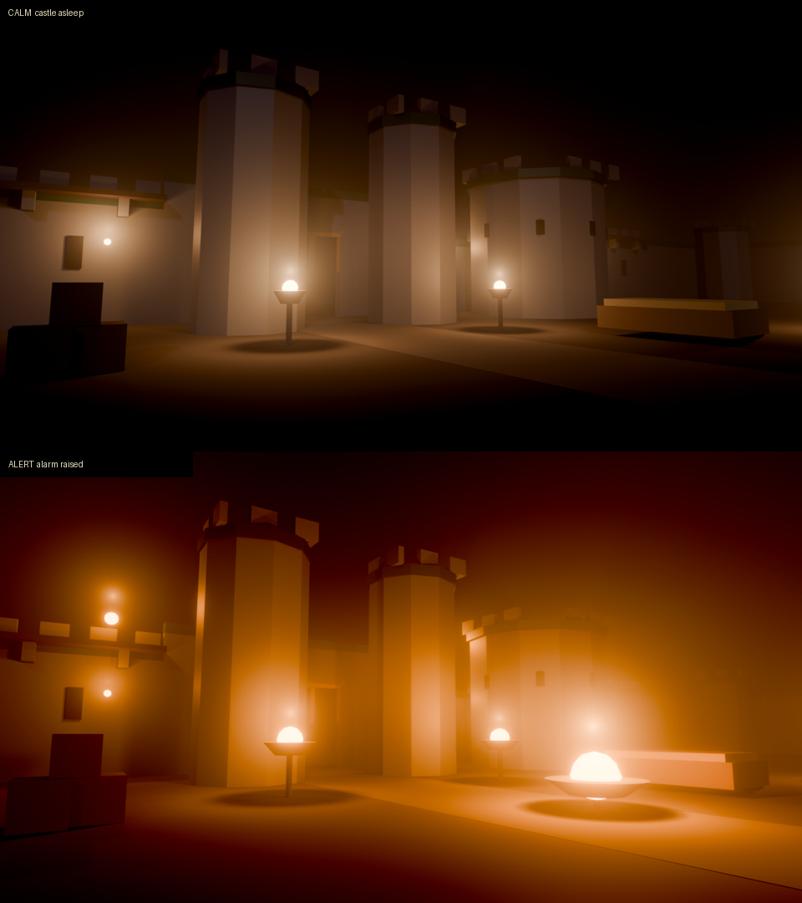

<title>Night Atmosphere Spec</title>
<link rel="preconnect" href="https://fonts.googleapis.com">
<link rel="preconnect" href="https://fonts.gstatic.com" crossorigin>
<link rel="stylesheet" href="https://fonts.googleapis.com/css2?family=IM+Fell+English+SC&family=Alegreya:ital,wght@0,400;0,600;1,400&family=JetBrains+Mono:wght@400&display=swap">
<style>
  :root {
    --ground: #F1EBDD;
    --panel: #E6DDC9;
    --ink: #1E1B17;
    --muted: #5C5446;
    --rule: #CFC3A8;
    --fire: #B4461F;
    --moon: #4A5F86;
    --gold: #9C7A12;
    color-scheme: light;
  }
  @media (prefers-color-scheme: dark) {
    :root:not([data-theme="light"]) {
      --ground: #14120E;
      --panel: #1F1B15;
      --ink: #DCD2BA;
      --muted: #A39680;
      --rule: #3A3228;
      --fire: #E07A45;
      --moon: #8FA4CF;
      --gold: #C9A227;
      color-scheme: dark;
    }
  }
  :root[data-theme="dark"] {
    --ground: #14120E;
    --panel: #1F1B15;
    --ink: #DCD2BA;
    --muted: #A39680;
    --rule: #3A3228;
    --fire: #E07A45;
    --moon: #8FA4CF;
    --gold: #C9A227;
    color-scheme: dark;
  }

  body {
    background: var(--ground);
    color: var(--ink);
    font: 17px/1.6 "Alegreya", Georgia, "Times New Roman", serif;
  }
  .page {
    max-width: 44rem;
    margin: 0 auto;
    padding-inline: 18px;
    padding-block: 28px 64px;
    display: flex;
    flex-direction: column;
    gap: 2.4rem;
  }
  h1, h2, h3 {
    font-family: "IM Fell English SC", "Alegreya", Georgia, serif;
    font-weight: 400;
    line-height: 1.15;
    text-wrap: balance;
    margin: 0;
  }
  h1 { font-size: clamp(2rem, 7vw, 2.8rem); }
  h2 { font-size: 1.6rem; }
  h3 { font-size: 1.15rem; color: var(--fire); }
  p { margin: 0; }
  section { display: flex; flex-direction: column; gap: 0.9rem; }
  section + section { border-top: 1px solid var(--rule); padding-top: 2.2rem; }
  .eyebrow {
    font: 0.72rem/1.2 "JetBrains Mono", ui-monospace, monospace;
    letter-spacing: 0.12em;
    text-transform: uppercase;
    color: var(--muted);
  }
  .status {
    align-self: flex-start;
    font: 0.75rem/1 "JetBrains Mono", ui-monospace, monospace;
    letter-spacing: 0.06em;
    border: 1px solid var(--fire);
    color: var(--fire);
    padding: 0.45rem 0.6rem;
    border-radius: 3px;
  }
  .anchor {
    font-style: italic;
    font-size: 1.25rem;
    line-height: 1.45;
    border-left: 3px solid var(--fire);
    padding-left: 1rem;
  }
  code, .mono {
    font-family: "JetBrains Mono", ui-monospace, monospace;
    font-size: 0.82em;
    color: var(--moon);
    overflow-wrap: anywhere;
  }
  figure { margin: 0; display: flex; flex-direction: column; gap: 0.5rem; }
  figure img { width: 100%; border-radius: 3px; display: block; }
  figcaption { font-size: 0.9rem; color: var(--muted); }
  ol, ul { margin: 0; padding-left: 1.3rem; display: flex; flex-direction: column; gap: 0.55rem; }
  li::marker { color: var(--fire); }
  strong { font-weight: 600; }
  .table-wrap { overflow-x: auto; border: 1px solid var(--rule); border-radius: 3px; }
  table { border-collapse: collapse; width: 100%; min-width: 30rem; font-size: 0.92rem; }
  th, td { text-align: left; vertical-align: top; padding: 0.55rem 0.7rem; border-bottom: 1px solid var(--rule); }
  tr:last-child td { border-bottom: 0; }
  th { font-family: "JetBrains Mono", ui-monospace, monospace; font-weight: 400; font-size: 0.72rem;
       letter-spacing: 0.08em; text-transform: uppercase; color: var(--muted); background: var(--panel); }
  td:first-child { font-weight: 600; white-space: nowrap; }
  .alarm th:nth-child(2) { color: var(--moon); }
  .alarm th:nth-child(5) { color: var(--fire); }
  .risk { background: var(--panel); padding: 1rem 1.1rem; border-radius: 3px; display: flex; flex-direction: column; gap: 0.6rem; }
  .ask { border: 1px solid var(--fire); border-radius: 3px; padding: 1.1rem; display: flex; flex-direction: column; gap: 0.5rem; }
</style>

<main class="page">
  <header style="display:flex;flex-direction:column;gap:0.8rem">
    <span class="eyebrow">Plunderspell · design spec · 2026-09-24</span>
    <h1>Night atmosphere</h1>
    <p>The castle's look, anchored before any more rooms or enemies are built, plus the second pass on the High Medieval outer area.</p>
    <span class="status">Approved section by section · not built yet</span>
  </header>

  <section>
    <p class="anchor">A sleeping castle in warm fog. Fire is the only warmth and the only safety. When the alarm rises, the fire spreads and reddens.</p>
    <figure>
      
      <figcaption>The chosen direction: calm on top, alarm raised below. Blender renders of the real castle modules; the surfaces are still flat colour, because the surface shader doesn't exist yet.</figcaption>
    </figure>
  </section>

  <section>
    <span class="eyebrow">What was decided</span>
    <h2>Decisions</h2>
    <div class="table-wrap">
      <table>
        <tr><th>Question</th><th>Decision</th></tr>
        <tr><td>Time of day</td><td>Night.</td></tr>
        <tr><td>Surfaces</td><td>One stylised, world-projected shader on everything now. Hand-painted textures for the gatehouse, keep and chapel later.</td></tr>
        <tr><td>Outer area</td><td>A dressed outer bailey inside the wall. No wall walk, nothing outside the wall.</td></tr>
        <tr><td>Darkness in gameplay</td><td>Not yet. Every fire is tagged as a light source so stealth can use it later.</td></tr>
        <tr><td>Hardware</td><td>Must run on a Steam Deck and a weak PC; scales up with headroom.</td></tr>
        <tr><td>Reference look</td><td>None of Dishonored, Sea of Thieves, Thief/Hunt or Valheim: the warm fire-in-fog renders instead.</td></tr>
        <tr><td>Calm to alert</td><td>Steps with each alarm stage, easing over about 2 seconds.</td></tr>
        <tr><td>Placing fires</td><td>Authored fire points per room, the same pipeline as loot points.</td></tr>
        <tr><td>Audio</td><td>Out of scope. This pass is visual only.</td></tr>
      </table>
    </div>
  </section>

  <section>
    <span class="eyebrow">Section 1</span>
    <h2>Art direction</h2>
    <ol>
      <li><strong>Fire leads, the moon supports.</strong> Warm light comes only from flame. The moon is a faint cool fill that separates shapes from the sky. Anywhere far from fire is dark enough to hide in.</li>
      <li><strong>The fog is the canvas.</strong> Firelight shows as glowing halos in the fog. The distance falls into warm-black haze, which also hides the edge of the world.</li>
      <li><strong>Colour follows the art bible.</strong> <span style="color:var(--gold)">Gold</span> means treasure only. <span style="color:var(--fire)">Madder red</span> means alarm, full-alert fire and blood, so a red castle means trouble. Lapis and verdigris are magic only, so spells are the only cool, saturated glow.</li>
      <li><strong>Stone goes darker at night.</strong> The limestone colour renders near-white in every sample. Night stone is a darker, warmer version.</li>
      <li><strong>Stylised and painterly, never photoreal.</strong> Soft banded light, soot in crevices, worn edges. Silhouette before detail.</li>
      <li><strong>Every era follows the same rules.</strong> Only the stone and flame colours shift per era.</li>
    </ol>
  </section>

  <section>
    <span class="eyebrow">Section 2</span>
    <h2>Lighting and alarm stages</h2>
    <p><strong>Fire points.</strong> Each castle piece's Blender builder records where its fires go, next to its loot points. Each point has a kind and the alarm stage that lights it. They export to <code>CastleFireAnchors.json</code>, the same way loot points do today.</p>
    <div class="table-wrap">
      <table>
        <tr><th>Kind</th><th>What it is</th><th>Lit from</th></tr>
        <tr><td>Sconce</td><td>Wall torch</td><td>Calm (some), Stirred (all)</td></tr>
        <tr><td>Brazier</td><td>Iron bowl in yards and halls</td><td>Calm; flares at Roused</td></tr>
        <tr><td>Hearth</td><td>Fireplace, forge, kitchen fire</td><td>Always</td></tr>
        <tr><td>Beacon</td><td>Big fire on the wall walk or a tower</td><td>Roused</td></tr>
      </table>
    </div>
    <p><strong>Each fire</strong> gets a stylised flame, embers, a flickering light, a glow halo in the fog, and a light-source tag for future stealth. At full alert it grows about 1.5×, burns hotter and redder.</p>
    <p><strong>One castle-wide director</strong> listens for the alarm changing stage. That event already reaches every player's machine, so each one updates its own visuals and nothing new goes over the network.</p>
    <div class="table-wrap alarm">
      <table>
        <tr><th></th><th>Calm</th><th>Stirred</th><th>Roused</th><th>HueAndCry</th></tr>
        <tr><td>Fires lit</td><td>Hearths, some sconces</td><td>All sconces</td><td>Braziers flare, beacons lit</td><td>Everything, at maximum</td></tr>
        <tr><td>Flame</td><td>Amber</td><td>Amber</td><td>Orange</td><td>Madder red</td></tr>
        <tr><td>Fog</td><td>Warm, thick</td><td>Warmer</td><td>Glowing orange</td><td>Red-orange glow</td></tr>
        <tr><td>Grade</td><td>Soft</td><td>Slightly more contrast</td><td>Punchier</td><td>Hard contrast, red lift</td></tr>
      </table>
    </div>
    <p><strong>Shadow budget.</strong> Only the nearest fires cast shadows: 2 on Low, 4 on Medium, 8 on High. The rest light without shadows, and distant ones become glow only. Fifty fires stay affordable on a Deck.</p>
  </section>

  <section>
    <span class="eyebrow">Section 3</span>
    <h2>Surfaces: one shader</h2>
    <ol>
      <li><strong>Base colour</strong> from the existing palette texture. No piece needs rebuilding for this.</li>
      <li><strong>Projected detail.</strong> Four small greyscale textures are projected by world position, chosen by each surface's colour: stone gets block joints and chisel marks, oak gets planks and grain, iron gets hammered pitting, cloth gets a weave. The meshes already use one material per colour, so the mapping is automatic.</li>
      <li><strong>Soot and wear.</strong> Blender bakes a dirt pass into every mesh: darker crevices and arch undersides, brighter outer edges. Every castle piece is rebuilt once.</li>
      <li><strong>Painted, banded light.</strong> Two or three soft steps instead of a smooth fade, with a warm-dark shadow side instead of grey.</li>
      <li><strong>Night stone tint</strong> per era, instead of repainting the palette.</li>
    </ol>
    <p>Enemies and loot keep their baked textures but get the same banded light, so everything sits in one painted world. On Low, the projected detail becomes one cheap blend; soot and banding stay.</p>
  </section>

  <section>
    <span class="eyebrow">Section 4</span>
    <h2>The outer bailey</h2>
    <p>The curtain wall is a ring of 12 m cells, each with its wall on the outer edge, which leaves the empty strip about 10 m wide between wall and rooms. That strip becomes the bailey.</p>
    <div class="table-wrap">
      <table>
        <tr><th>Variant</th><th>What's against the wall</th></tr>
        <tr><td>Lean-to</td><td>Timber shed, barrels, sacks</td></tr>
        <tr><td>Woodpile</td><td>Stacked logs, hay cart, chopping block</td></tr>
        <tr><td>Pens</td><td>Wattle fence, trough, chicken coop</td></tr>
        <tr><td>Training</td><td>Wooden posts, weapon rack, straw targets</td></tr>
        <tr><td>Gate yard</td><td>Carts, hay, the main brazier pair; always beside the gate</td></tr>
        <tr><td>Plain</td><td>An open stretch, so it doesn't feel cluttered</td></tr>
      </table>
    </div>
    <ul>
      <li>Chosen from the raid's seed, never the same variant twice in a row. Each carries wall sconces and a yard brazier.</li>
      <li>A packed-earth path loops the ring, replacing the flat grey plane.</li>
      <li>Empty courtyard cells get a purpose by zone: herb garden, midden, well yard, tiltyard, cloister, a small garden near the keep.</li>
      <li><strong>Must hold:</strong> a walkable lane at least 2.5 m wide all round, and the existing navigation audit still showing 100% of the castle reachable. Cover breaks sight lines but never blocks the path.</li>
      <li><strong>Unchanged:</strong> loot still never spawns in the bailey strip. High Medieval first; other eras later.</li>
    </ul>
  </section>

  <section>
    <span class="eyebrow">Section 5</span>
    <h2>Fog, post-processing, quality</h2>
    <ol>
      <li><strong>Base fog, every level:</strong> Unity's distance fog, coloured per alarm stage, plus height fog so towers rise out of the haze.</li>
      <li><strong>Fire halos, every level:</strong> a soft glow sprite on every flame. Cheap, and most of the look.</li>
      <li><strong>Volumetric fog, High only:</strong> light shafts through arrow slits. Written from scratch, so it's the riskiest item, built last and optional.</li>
    </ol>
    <p><strong>Post-processing:</strong> four profiles blended by alarm stage. ACES tonemapping, a warm amber-and-moon-blue colour split reddening per stage, bloom for the flame glow, a subtle vignette, light film grain on High only. No motion blur or depth of field: both hurt readability in co-op fights.</p>
    <div class="table-wrap">
      <table>
        <tr><th></th><th>Low (Deck)</th><th>Medium</th><th>High</th></tr>
        <tr><td>Shadowed fires</td><td>2</td><td>4</td><td>8</td></tr>
        <tr><td>Other fires lit</td><td>16</td><td>32</td><td>all</td></tr>
        <tr><td>Moon shadows</td><td>30 m</td><td>50 m</td><td>80 m</td></tr>
        <tr><td>Surface detail</td><td>simple</td><td>full</td><td>full</td></tr>
        <tr><td>Ambient occlusion</td><td>off</td><td>half</td><td>full</td></tr>
        <tr><td>Volumetric fog</td><td>off</td><td>off</td><td>on</td></tr>
      </table>
    </div>
    <p>A Graphics option joins the Settings screen. Medium by default; Low is picked automatically on a Steam Deck.</p>
  </section>

  <section>
    <span class="eyebrow">Order of work</span>
    <h2>Build order</h2>
    <p>Each step is committed on its own and ends with in-engine screenshots of the bailey and an interior, calm and alerted, on Low and High, plus frame timings.</p>
    <ol>
      <li><strong>Night baseline:</strong> quality levels, moon, sky, fog, the four post-processing profiles and the alarm-driven director. Visible in the existing castle straight away.</li>
      <li><strong>Fire:</strong> fire prefabs, fire points through the pipeline, per-stage lighting, shadow budget, halos.</li>
      <li><strong>Surfaces:</strong> detail textures, the soot bake, the shader, banded light on enemies and loot.</li>
      <li><strong>Outer bailey:</strong> dressing variants, the path, courtyards, the navigation audit re-run.</li>
      <li><strong>Volumetric fog:</strong> High only, optional.</li>
    </ol>
  </section>

  <section>
    <span class="eyebrow">Watch for</span>
    <h2>Risks and limits</h2>
    <div class="risk">
      <p><strong>Volumetric fog</strong> is custom rendering code. It's last and optional for that reason.</p>
      <p><strong>Banded lighting</strong> needs a custom light loop inside Unity's renderer. If it can't be made to work, the fallback is standard lighting plus the colour grade: no banding, everything else kept.</p>
      <p><strong>Rebuilding every castle piece</strong> for the soot bake. The rebuild is scripted, and the loot-point check and navigation audit must pass afterwards.</p>
    </div>
    <p><strong>Not in this pass:</strong> audio, stealth by light, the wall walk, anything outside the wall, loot in the bailey, themed wings, the crypt below, doors and hazards, hero textures, and bailey kits for other eras.</p>
  </section>

  <section>
    <div class="ask">
      <h3>Your call</h3>
      <p>Approve this, or say what to change. Once it's approved, the step-by-step implementation plan comes next. The full version with file references is <code>docs/plans/night-atmosphere.md</code> in the repo.</p>
    </div>
  </section>
</main>
